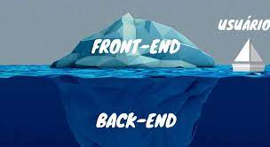

Manual Back-End
Guia Para Pessoas Desenvolvedoras
Back-End 2021 - O que eu preciso saber?!
Guia para desenvolvedores10 dicas que desenvolvedores web iniciantes devem saber
Desenvolvedores web iniciantes devem saber5 Melhores Livros Para Desenvolvedores Front-End Iniciantes
Indicações de livros